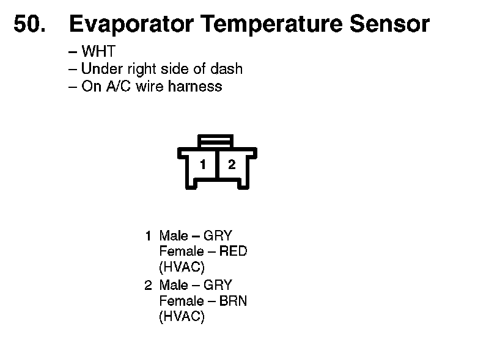

Operation CHARM
: Car repair manuals for everyone.
Home
>>
Honda
>>
2007
>>
Civic Si L4-2.0L
>>
Repair and Diagnosis
>>
Heating and Air Conditioning
>>
Sensors and Switches - HVAC
>>
Evaporator Temperature Sensor / Switch
>>
Diagrams
Evaporator Temperature Sensor / Switch: Diagrams
50. Evaporator Temperature Sensor:
